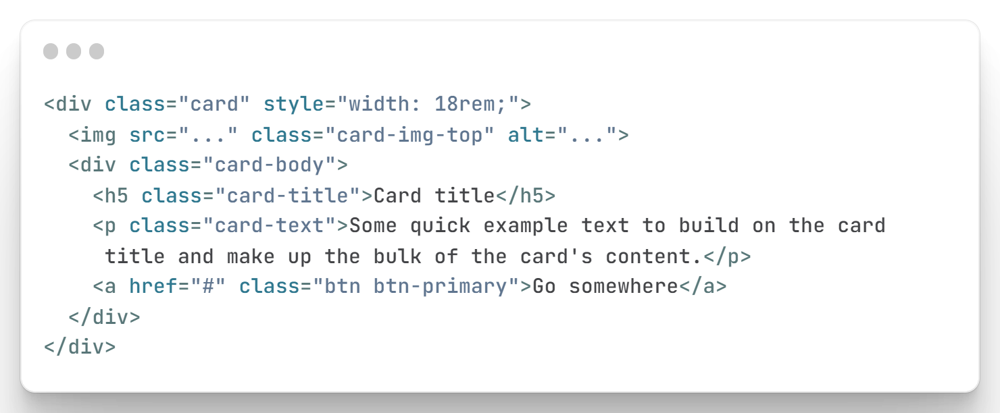

Containers are the most basic layout element in Bootstrap and are required
when using our default grid system.
Containers are used to contain, pad, and (sometimes) center the
content within them.
Default font-size of 16px, and its line-height is 1.5.
Bootstrap's grid system uses a series of containers, rows, and columns to layout and align content.
Enhanced Grid System The grid system is retained in Bootstrap 5. However, an extra grid tier xxl has been introduced to minimize the effort in making the pages responsive on higher resolution displays. Columns don't have a default relative position in Bootstrap 5. Classes have been added to address vertical spacing.
Enhanced Form Elements The form elements in Bootstrap 4 have defaulted to the browser-provided view. However, in Bootstrap 5, the form elements have a custom design that enables them to have a consistent look and feel in all browsers. The new form controls are based on completely semantic, standard form controls. This helps developers to avoid adding extra markups for form controls.
Utilities API Unlike Bootstrap 4, Bootstrap 5 enables the developers to modify and create their own utilities. You can simply use sass to create your own utilities. You can use the state option to generate dummy class variations like hover and focus.
Support for IE Bootstrap 5 no longer supports Internet Explorer 10 and 11 like its predecessor, Bootstrap 4.
Extended Colors Bootstrap 4 had limited color options. But Bootstrap 5 has included many new color options to its color palette, enabling you to choose from the various shades available. You can find some of the color shades below.
Bootstrap Icons Bootstrap 4 didn't have an SVG icon library. You had to use other third-Party libraries like Font Awesome to use icons in your applications. But Bootstrap 5 has taken care of this issue by introducing its own SVG library with 1000+ icons.
Bootstrap allows you to group a series of buttons together (on a single line) in a button group
Add an anchor tag with the class of .thumbnail around an image.
This
adds four pixels of padding and a gray border.
On hover, an animated
glow outlines the image.
In Bootstrap 4, flex box is used to control the layout and alignment specification of Bootstrap 4 components. This box makes it easier to design flexible responsive layout structures without using float or positioning attributes.
A basic Bootstrap card consists of a . card class with the . card-body class, allowing you to add text, images, links, and other Bootstrap elements within a rounded border.
